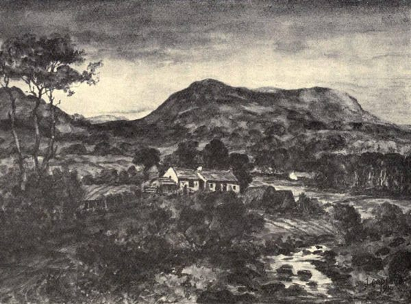

The Devil then roared mightily and cryed out, “What! will ye not speake to me? I shall strike the bairns and do all manner of mischief.”
But after that time no answer was made to it, and so for a long time no speech was heard. Several times hath he beat the children in their beds, and the claps of his loof upon their buttocks would have been heard, but without any trouble to them. While the Minister and gentlemen were standing at the door readie to go home the Minister’s wife and the goodwife were within.
Then cryed Satan, “Grissel, put out the candle.”
Sayes she to the Minister’s wife, “Shall I do it?”
“No,” says the other, “For then you shal obey the Devil.”
Upon this he cryes again with a louder shout, “Put out the candle.” The candle still burns. The third time he cries, “Put out the candle,” and no obedience being given to him he did so often reiterate these words and magnify his voice that it was astonishment to hear him, which made them stop their ears, they thinking the sound was just at their ears. At last the candle was put out. “Now,” says he, “I’le trouble you no more this night.”
I must insert here what I heard from one of the Ministers of that Presbytrie, who with the rest were appointed to meet at the Weaver’s house for prayer and other exercises of that kind. When the day came, five only met. But before they went in they stood a while in the croft, which layes round about the house, consulting what to do. They resolved upon two things—First, there should be no words of conjuration used, as commanding him in the name of God to tell whence he was or to depart from the familie, for which they thought they had no call from God. Secondly, that when the Devil spake none should answer him, but hold on in their worshipping of God and the duties they were called to. When all of them had prayed by turns and three of them had spoken a word or two from the Scripture, they prayed again, and then ended without any disturbance. When that brother who informed me had gone out, one Hue Nisbet, one of the company, came running after him, desiring him to come back, for he had begun to whistle. “No,” sayes the other, “I tarried as long as God called me, but go in again I will not.”
After this the said Gilbert suffered much loss, and had many sad nights, not two nights in one week free, and thus it continued till April; from April till July he had some respite and ease, but after he was molested with new assaults, and even their victuals were so abused that the family was in hazard of starving, and that which they eat gave them not their ordinary satisfaction they were wont to find.
In this sore and sad affliction Gilbert Campbel resolved to make his addresses to the Synod of Presbyters for advice and counsel what to do, which was appointed to conveen in October, 1655—namely, whether to forsake the house or not? The Synod, by their committy appointed to meet at Glenluce in February, 1656, thought fit that a solemn humiliation should be kept through all the bounds of the Synod; and, among other causes, to request God in behalf of that afflicted family, which, being done carefully, the event was that his troubles grew less till April, and from April to August he was altogether free. About which time the Devil began with new assaults, and taking the ready meat that was in the house did sometimes hide it in holes by the door-posts, and at other times did hide it under the beds, and sometimes among the bedcloaths, and under the linnings, and at last did carry it quite away, till nothing was left there, save bread and water. This minds me of a small passage, as a proof of what is said. The goodwife one morning making pottage for the children’s breakfasts had the tree-plate, wherein the meal lay, snatched from her quickly.
“Well,” says she, “let me have the plate again.” Whereupon it came flying at her without any skaith done. ’Tis like if she had sought the meale too she might have got it; such is his civility when he is entreated. A small homage will please him ere he want all. After this he exercised his malice and cruelty against all persons in the family in wearying them in the night time by stirring and moving thorow the house, so that they had no rest for noise, which continued all the moneth of August after this manner. After which time the Devil grew yet worse by roaring, and terrifying them by casting of stones, by striking them with staves on their beds in the night time. And upon the 18 of September, about midnight, he cryed out with a loud voice, “I shall burn the house.” And about three or four nights after he set one of the beds on fire, which was soon put out without any prejudice, except the bed itself.
Thus I have written a short and true account of all the material passages which occurred. To write every particular, especially of lesser moment, would fill a large volum. The goodman lived several years after this in the same house; and it seems that by some conjuration or other the Devil suffered himself to be put away, and gave the Weaver a peaceable habitation. This Weaver has been a very odd man that endured so long these marvellous disturbances.
“A True Relation of an Apparition, Expressions and Actings, of a Spirit which infested the house of Andrew Mackie, in Ringcroft of Stocking, in the Parish of Rerwick, in the Stewartry of Kirkcudbright, in Scotland.” Printed in Edinburgh by George Mosman, and sold at his shop in the Parliament Close, 1696.
Whereas many are desirous to know the truth of the matter, as to the Evil Spirit and its actings, that troubled the family of Andrew Mackie, in Ringcroft of Stocking, &c., and are liable to be mis-informed, as I do find by the reports that come to my own ears of that matter; therefore that satisfaction may be given, and such mistakes cured or prevented, I, the Minister of the said parish (who was present several times, and was witness to many of its actings, and have heard an account of the whole of its methods and actings from the persons present, towards whom, and before whom it did act), have given the ensuing and short account of the whole matter, which I can attest to be the very truth as to that affair; and before I come to the relation itself, I premise these things with respect to what might have been the occasion and rise of that spirit’s appearing and acting.
1. The said Andrew Mackie being a mason to his employment, ’tis given out, that when he took the mason word, he devoted his first child to the Devil; but I am certainly informed he never took the same, and knows not what that word is. He is outwardly moral; there is nothing known to his life and conversation, but honest, civil, and harmless, beyond many of his neighbours; doth delight in the company of the best; and when he was under the trouble of that evil spirit, did pray to the great satisfaction of many. As for his wife and children, none have imputed any thing to them as the rise of it, nor is there any ground, for aught I know, for any to do so.
2. Whereas it is given out that a woman, sub mala fama, did leave some clothes in that house in the custody of the said Andrew Mackie, and died before they were given up to her, and he and his wife should have kept some of them back from her friends. I did seriously pose both him and his wife upon the matter; they declared they knew not what things were left, being bound up in a sack, but did deliver entirely to her friends all they received from the woman, which I am apt to believe.

“Ringcroft of Stocking,” now no longer in existence.
(Sketch by J. Copland, Dundrennan.)
3. Whereas one, —— Macknaught, who sometime before possessed the house, did not thrive in his own person or goods. It seems he had sent his son to a witch-wife who lived then at the Routing Bridge, in the parish of Irongray, to enquire what might be the cause of the decay of his person and goods. The youth, meeting with some foreign soldiers, went abroad to Flanders, and did not return with an answer. Some years after there was one John Redick in this parish who, having had occasion to go abroad, met with the said young Macknaught in Flanders, and they knowing other, Macknaught enquired after his father and other friends; and finding the said John Redick was to go home, desired him to go to his father, or whoever dwelt in the Ringcroft, and desire them to raise the door threshold, and search till they found a tooth, and burn it, for none who dwelt in that house would thrive till that was done. The said John Redick coming home, and finding the old man Macknaught dead and his wife out of that place, did never mention the matter nor further mind it till this trouble was in Andrew Mackie’s family, then he spoke of it and told the matter to myself. Betwixt Macknaught’s death and Andrew Mackie’s possession of this house there was one Thomas Telfair who possessed it some years. What way he heard the report of what the witch-wife had said to Macknaught’s son I cannot tell; but he searched the door threshold and found something like a tooth, did compare it with the tooth of a man, horse, nolt, and sheep (as he said to me), but could not say which it did resemble, only it did resemble a tooth. He did cast it into the fire, where it burnt like a candle or so much tallow; yet he never knew any trouble about that house by night or by day, before or after, during his possession. These things premised being suspected to have been the occasion of the troubles, and there being no more known as to them than what is now declared, I do think the matter still unknown what may have given a rise thereto, but leaving this I subjoin the matter as follows:
In the month of February, 1695, the said Andrew Mackie had some young beasts, which in the night-time were still loosed and their bindings broken, he taking it to be the unrulyness of the beasts, did make stronger and stronger bindings, of withes and other things, but still all were broken. At last he suspected it to be some other thing, whereupon he removed them out of that place; and the first night thereafter one of them was bound with a hair-tedder to the back of the house, so strait that the feet of the beast only touched the ground, but could move no way else, yet it sustained no hurt. Another night, when the family were all sleeping, there was the full of a back creel of peats set together in the midst of the house floor, and fire put in them; the smoke wakened the family, otherwise the house had been burnt; yet nothing all the time was either seen or heard.
Upon the 7th of March there were stones thrown in the house in all the places of it; but it could not be discovered from whence they came, what, or who threw them. After this manner it continued till the Sabbath, now and then throwing both in the night and day, but was busiest throwing in the night-time.
Upon Saturday, the family being all without, the children coming in saw something which they thought to be a body sitting by the fireside, with a blanket (or cloth) about it, whereat they were afraid. The youngest, being a boy about nine or ten years of age, did chide the rest saying, “Why are you feared, let us saine (or bless) ourselves, and then there is no ground to fear it.” He perceived the blanket to be his, and saining (or blessing) himself, ran and pulled the blanket from it saying, “Be what it will, it hath nothing to do with my blanket;” and then they found it to be a fourfooted stool set upon the end, and the blanket cast over it.
Upon the Sabbath, being the 11th of March, the crook and pot-cleps were taken away, and were awanting four days, and were found at last on a loft, where they had been sought several times before.—This is attested by Charles Macklellan of Colline, and John Cairns in Hardhills. It was observed that the stones which hit any person had not half their natural weight; and the throwing was more frequent on the Sabbath than at other times, and especially in time of prayer, above all other times, it was busiest then, throwing most at the person praying. The said Andrew Mackie told the matter to me upon Sabbath after sermon.
Upon the Tuesday thereafter I went to the house, did stay a considerable time with them and prayed twice, and there was no trouble. Then I came out with a resolution to leave the house, and as I was standing speaking to some men at the barn end I saw two little stones drop down on the croft at a little distance from me, and then immediately some crying out of the house that it was become as ill as ever within; whereupon I went into the house again, and as I was at prayer it threw several stones at me, but they did no hurt, being very small; and after there was no more trouble till the eighteenth day of March, and then it began as before, and threw more frequently greater stones, whose strokes were sorer where they hit, and thus it continued to the 21st. Then I went to the house, and stayed a great part of the night, but was greatly troubled; stones and several other things were thrown at me, I was struck several times on the sides and shoulders very sharply with a great staff, so that those who were present heard the noise of the strokes. That night it tore off the bedside, and rapped upon the chests and boards as one calling for access.—This is attested by Charles Macklellan of Colline, William Mackminn, and John Tait in Torr. That night as I was once at prayer, leaning on a bedside, I felt something pressing on my arm; I, casting my eyes thither, perceived a little white hand and arm from the elbow down, but presently it evanished. It is to be observed that, notwithstanding of all that was felt and heard, from the first to the last of this matter, there was never anything seen, except that hand I saw; and a friend of the said Andrew Mackie’s said he saw as it were a young boy about the age of fourteen years, with gray clothes, and a bonnet on his head, but presently disappeared, as also what the three children saw sitting at the fireside.
Upon the 22d the trouble still increased, both against the family and against the neighbours who came to visit them, by throwing stones and beating them with staves; so that some were forced to leave the house before their inclination.—This is attested by Charles Macklellan in Colline, and Andrew Tait in Torr. Some it would have met as they came to the house, and stoned with stones about the yards, and in like manner stoned as they went from the house, of whom Thomas Telfair in Stocking was one. It made a little wound on the said Andrew Mackie’s brow; did thrust several times at his shoulder, he not regarding; at last it gripped him so by the hair, that he thought something like nails of fingers scratched his skin. It dragged severals up and down the house by the cloathes.—This is attested by Andrew Tait. It gripped one Keige, miller in Auchencairn, so by his side that he entreated his neighbours to help, and cried it would rive the side from him. That night it lifted the cloathes off the children as they were sleeping in bed, and beat them on the hips as if it had been with one’s hand, so that all that were in the house heard it. The door bar and other things would go through the house as if a person had been carrying them in their hand, yet nothing seen doing it.—This is attested by John Telfair in Auchinleck, and others. It rattled on the chests and bedsides with a staff, and made a great noise; and thus it continued by throwing stones, striking with staves and rattling in the house, till the 2d of April. At night it cryed “Whist, whist,” at every sentence in the close of prayer; and it whistled so distinctly that the dog barked and ran to the door, as if one had been calling to hound him.
Aprile 3d, it whistled several times and cryed “Whist, whist.”—This is attested by Andrew Tait.
Upon the 4th of April Charles Macklellan of Colline, landlord, with the said Andrew Mackie, went to a certain number of ministers met at Buittle, and gave them an account of the matter, whereupon these ministers made public prayers for the family, and two of their number, viz., Mr Andrew Ewart, minister of Kells, and Mr John Murdo, minister of Crossmichael, came to the house and spent that night in fasting and praying, but it was very cruel against them, especially by throwing great stones, some of them about half a stone weight. It wounded Mr Andrew Ewart twice in the head, to the effusion of his blood, it pulled off his wig in time of prayer, and when he was holding out his napkin betwixt his hands it cast a stone in the napkin and therewith threw it from him. It gave Mr John Murdo several sore strokes, yet the wounds and bruises received did soon cure. There were none in the house that night escaped from its fury and cruelty. That night it threw a fiery peat amongst the people, but it did no hurt, it only disturbed them in time of prayer. And also in the dawning as they rose from prayer the stones poured down on all who were in the house to their hurt.—This is attested by Mr Andrew Ewart, Mr John Murdo, Charles Macklellan, and John Tait.
Upon the 5th of April it set some thatch straw on fire which was in the barn yard; at night, the house being very throng with neighbours, the stones were still thrown down among them. As the said Andrew Mackie and his wife went out to bring in some peats to the fire, when she came to the door she found a broad stone to shake under her foot, which she never knew to be loose before; she resolved with herself to see what was beneath it in the morning thereafter.
Upon the 6th of April, when the house was quiet, she went to the stone and there found seven small bones, with blood and some flesh, all closed in a piece of old suddled paper; the blood was fresh and bright. The sight whereof troubled her, and being afraid laid all down again and ran to Colline’s house, being a quarter of a mile distant; but in that time it was worse than ever before, by throwing stones and fire balls in and about the house, but the fire as it lighted did evanish. In that time it threw a hot stone into the bed betwixt the children, which burnt through the bed-cloathes; and after it was taken out by the man’s eldest son, and had layen on the floor more than an hour and a half, the said Charles Macklellan of Colline could not hold it in his hand for heat.—This is attested by Charles Macklellan. It thrust a staff through the wall of the house above the children in the bed, shook it over them and groaned. When Colline came to the house he went to prayer before he offered to lift the bones; all the time he was at prayer it was most cruel, but as soon as he took up the bones the trouble ceased.—This is attested by Charles Macklellan. He sent them presently to me, upon sight whereof I went immediately to the house. While I was at prayer it threw great stones which hit me, but did no hurt, then there was no more trouble that night.
The 7th of April being Sabbath, it began again and threw stones, and wounded William Macminn, a blacksmith, on the head; it cast a plough-sock at him and also a trough stone upwards of three stone weight, which did fall upon his back, yet he was not hurt thereby.—Attested by William Macminn. It set the house twice on fire, yet there was no hurt done, in respect some neighbours were in the house who helped to quench it. At night in the twilight as John Mackie, the said Andrew Mackie’s eldest son, was coming home, near to the house, there was an extraordinary light fell about him and went before him to the house with a swift motion; that night it continued after its wonted manner.
April 8th, in the morning as Andrew Mackie went down the close he found a letter both written and sealed with blood. It was directed on the back thus, “3 years thou shall have to repent a nett it well,” and within was written, “Wo be to thee Scotland Repent and tak warning for the doors of haven ar all Redy bart against thee, I am sent for a warning to thee to flee to God yet troublt shall this man be for twenty days, repent repent repent Scotland or else thou shall.” In the middle of the day the persons alive who lived in that house since it was built, being about twenty-eight years, were conveined by appointment of the civil magistrate before Colline, myself, and others, and did all touch the bones, in respect there was some suspicion of secret murder committed in the place, but nothing was found to discover the same.
Upon the 9th of April the letter and bones were sent to the ministers, who were all occasionally met at Kirkcudbright; they appointed five of their number, viz., Mr John Murdo, Mr James Monteith, Mr John Macmillan, Mr Samuel Spalding, and Mr William Falconer, with me, to go to the house and spend so much time as we were able in fasting and prayer.
Upon the 10th of April we went to the house, and no sooner did I begin to open my mouth but it threw stones at me and all within the house, but still worst at him who was at duty. It came often with such force upon the house that it made all the house to shake, it broke a hole through the timber and thatch of the house and powred in great stones, one whereof, more than a quarter weight, fell upon Mr Monteith’s back, yet he was not hurt. It threw another with great force at him when he was praying, bigger than a man’s fist, which hit him on the breast, yet he was neither hurt nor moved thereby. It was thought fit that one of our number with another person should go by turns and stand under the hole in the outside, so there was no more trouble from that place; but the barn being joined to the end of the house, it brake down the barn door and mid wall and threw stones up the house, but did no great hurt. It gripped and handled the legs of some as with a man’s hand, it hoised up the feet of others while standing on the ground, thus it did to William Lennox of Millhouse, myself, and others. In this manner it continued till ten o’clock at night, but after that there was no more trouble while we were about the house.—This is attested by Messrs James Monteith, John Murdo, Samuel Spalding, Wm. Falconer, William Lennox, and John Tait.
The 11th, 12th, and 13th it was worse than ever it was before, for not one that came into the house did escape heavy strokes. There was one Andrew Tait in Torr, as he was coming to stay with the family all night, by the way his dog catched a thulmart, when he came in he cast it by in the house; thereafter there were other three young men who came in also, and when they were all at prayer the Evil Spirit beat them with the dead thulmart and threw it before them. The three who knew it not to be in the house were greatly affrighted, especially one Samuel Thomson, a chapman, whom it also gripped by the side and back, and thrust as if it had been an hand beneath his clothes and into his pockets, he was so affrighted that he took sickness immediately.—This is attested by Andrew Tait.
The 14th being the Sabbath, it set some straw on fire that was in the barn yard, and threw stones till ten o’clock at night; it threw an dike spade at the said Andrew Mackie, with the mouth toward him, but he received no hurt; while an meal-sive was tossed up and down the house, the said Andrew Mackie takes hold of it, and as it were with difficulty gets the grip keeped, at last all within the rim is torn out. Thereafter it threw a handful of the sive rolled together at Thomas Robertson in Airds, who was witness to this, yet in all its actings there was never any thing seen, but what I mentioned before.
Upon the 15th of April, William Anderson, a drover, and James Paterson, his son-in-law, came to the house with Colline in the evening. Colline going home a while within night, the said Andrew Mackie sent his sons to convey him; as they returned they were cruelly stoned, and the stones rolled amongst their legs, like to break them. Shortly after they came in, it wounded William Anderson on the head, to the great effusion of his blood. In time of prayer it whistled, groaned, and cryed “Whist, whist.”—This is attested by John Cairns.
The 16th it continued whisting, groaning, whistling, and throwing stones in time of prayer; it cryed “Bo, bo,” and kick, cuck, and shook men back and forward, and hoised them up as if to lift them off their knees.—This is attested by Andrew Tait.
The whole family went from the house, and left five honest neighbours to wait on the same all night; but there was no hurt done to them, nor the family where they were, nor to those neighbours who stayed in the said Andrew Mackie’s house, only the cattle were cast over other to the hazard of killing them, as they were bound to the stakes, and some of them were loosed.—This is attested by John Cairns.
Upon the 18th they returned to their house again, and there was no hurt to them or their cattle that night, except in a little house, where there were some sheep, it coupled them together in pairs by the neck with straw ropes, made of an bottle of straw, which it took off an loft in the stable and carried to the sheep house, which is three or four pair of butts (arrow shots) distant, and it made more ropes than it needed for binding the sheep, which it left beside the straw in the sheep-house.—This is attested by Andrew Tait.
Upon the 19th it fired the straw in the barn, but Andrew Mackie put it out, (being there threshing) without doing any harm. It shot staves through the wall at him, but did no hurt.
The 20th, it continued throwing stones, whistling, and whisting, with all its former words. When it hit any person, and said, “Take you that till you get more,” that person was sure immediately of another; but when it said, “Take you that,” the person got no more for a while.—This is attested by John Tait.
The 21st, 22nd, and 23rd it continued casting stones, beating with staves, and throwing peat mud in the faces of all in the house, especially in time of prayer, with all its former tricks.
The 24th being a day of humiliation appointed to be kept in the parish for that cause, all that day from morning till night it continued in a most fearful manner without intermission, throwing stones with such cruelty and force that all in the house feared lest they should be killed.
The 25th it threw stones all night, but did no great hurt.
The 26th it threw stones in the evening and knocked several times on a chest, as one to have access; and began to speak and call those that were sitting in the house witches and rooks, and said it would take them to hell. The people then in the house said among themselves, if it had any to speak to it now, it would speak. In the meantime Andrew Mackie was sleeping. They wakened him, and then he, hearing it say “Thou shalt be troubled till Tuesday,” asked, “Who gave thee a commission?”
To whom it answered, “God gave me a commission, and I am sent to warn the land to repent, for a judgment is to come if the land do not quickly repent,” and commanded him to reveal it upon his peril; and if the land did not repent it said it would go to its father and get a commission to return with a hundred worse than itself, and would trouble every particular family in the land.
Andrew Mackie said to those that were with him, “If I should tell this I would not be believed.”
Then it said, “Fetch betters; fetch the Minister of the parish and two honest men upon Tuesday’s night, and I shall declare before them what I have to say.” Then it said, “Praise me and I will whistle to you; worship me and I will trouble you no more.”
Then Andrew Mackie said, “The Lord who delivered the three children out of the fiery furnace, deliver me and mine this night from the temptations of Satan.”
Then it replied, “You might as well have said, Shadrach, Meshach, Abednego.” In the meantime, while Andrew Mackie was speaking, there was one James Telfair in Buittle who was adding a word, to whom it said, “You are basely bred, meddling in other men’s discourse, wherein you are not concerned.” It likewise said, “Remove your goods, for I will burn the house.”
He answered, “The Lord stop Satan’s fury and hinder him of his designs.”
Then it said, “I will do it, or you shall guide well.”—All this is attested by John Tait in Torr and several others who cannot subscribe.
Upon the 27th it set fire to the house seven times.
The 28th, being the Sabbath, from sun-rising till sun-setting it still set the house on fire—as it was quenched in one part, instantly it was fired in another—and in the evening, when it could not get its designs fulfilled in burning the house, it pulled down the end of the house, all the stonework thereof, so that they could not abide in it any longer, but went and kindled their fire in the stable.
Upon the Sabbath night it pulled one of the children out of the bed, gripping him, as he thought, by the craig and shoulders; and took up a block of a tree as great as a plough-head, and held above the children, saying, “If I had a commission I would brain them.” Thus it expressed itself, in the hearing of all who were in the house.—Attested by William Macminn and John Crosby.
The 29th, being Monday, it continued setting fire to the house. The said Andrew Mackie finding the house so frequently set on fire, and being weary quenching it, he went and put out all the fire that was about the house, and poured water upon the hearth; yet after it fired the house several times, when there was no fire within a quarter of a mile of the house.—This is attested by Charles Macklellan and John Cairnes. In the midst of the day, as Andrew Mackie was threshing in the barn, it whispered in the wall and then cried, “Andrew, Andrew,” but he gave no answer to it. Then with an austere angry voice as it were, it said, “Speak;” yet he gave no answer. Then it said, “Be not troubled; you shall have no more trouble, except some casting of stones upon Tuesday to fulfill the promise,” and said, “Take away your straw.” I went to the house about 11 o’clock; it fired the house once after I went there. I stayed all night till betwixt three and four on Tuesday’s morning, during which time there was no trouble about the house, except two little stones dropped down at the fireside as we were sitting down at our first entry. A little after I went away it began to throw stones as formerly.—This is attested by Charles Macklellan and John Tait.
Upon Tuesday’s night, being the 30th of April, Charles Macklellan of Colline, with several neighbours, were in the barn. As he was at prayer he observed a black thing in the corner of the barn, and it did encrease as if it would fill the whole house. He could not discern it to have any form but as if it had been a black cloud; it was affrightning to them all, and then it threw bear-chaff and other mud upon their faces; and after did gripp severals that were in the house by the middle of the body, by the arms and other parts of their bodies, so strait that some said for five days thereafter that they thought they felt these gripps. After an hour or two of the night was thus past there was no more trouble.—This is attested by Charles Macklellan, Thomas Macminn, Andrew Paline, John Cairnes, and John Tait.
Upon Wednesday’s night, being the 1st of May, it fired a little sheep-house; the sheep were got out safe, but the sheep-house was wholly burnt. Since there has not been any trouble about the house by night nor by day.
Now all things aforesaid, being of undoubted verity, therefore I conclude with that of the Apostle, 1 Peter v., 8-9, “Be sober, be vigilant; because your adversary the devil, as a roaring lion, walketh about, seeking whom he may devour: Whom resist steadfast in the faith.”
This relation is attested, as to what they particularly saw, heard, and felt, by Andrew Ewart, minister of Kells; James Monteith, minister of Borgue; John Murdo, minister of Crossmichael; Samuel Spalding, minister of Parton; William Falconer, minister of Kelton; Charles Macklellan of Colline, William Lennox of Millhouse, Andrew Tait in Torr, John Tait in Torr, John Cairns in Hardhills, William Macminn, John Crosby, Thomas Macminn, Andrew Paline, &c.
“The Laird o’ Coul’s Ghost: an Eighteenth Century Chapbook. An Account of Mr Maxwell, Laird of Coul, his Appearance after Death to Mr Ogilvie, a Minister of the present Establishment at Innerwick.” (Abridged.)
Upon the third day of February, 1722, at seven o’clock at night, after I had parted with Thurston [his name Cant], and was coming up the Burial Road, one came riding up after me: upon hearing the noise of his horse’s feet, I took it to be Thurston, but upon looking back, and seeing the horse of a greyish colour, I called “Who is there?” The answer was, “The Laird of Coul [his name Maxwell], be not afraid.” Then looking to him by the help of the dark light which the moon afforded, I took him to be Collector Castellow designing to put a trick upon me, and immediately I struck at him with all my force with my cane, thinking I should leave upon him a mark, to make him remember his presumption; but being sensible, I aimed as well as ever I did in my life, yet my cane finding no resistance, but flying out of my hand the distance of about 60 feet, and observing it by its white head, I dismounted and took it up, and had some difficulty in mounting again, what by the ramping of my horse and what by reason of a certain kind of trembling throughout my whole joints, something likewise of anger had its share in the confusion; for, as I thought, he laughed when my staff flew away. Coming up with him again, who halted all the time I sought my staff, I asked once more “Who he was?” He answered, “The Laird of Coul.” I enquired, “If he was the Laird of Coul, what brought him hither?” and “What was his business with me?”
Coul—The reason of my waiting on you is that I know you are disposed to do for me a thing which none of your brethren in Nithsdale will so much as attempt, though it serve to ever so good purposes. I told him I would never refuse to do a thing to serve a good purpose, if I thought I was obliged to do it as my duty. He answered, since I had undertaken what he found few in Nithsdale would, for he had tried some upon that subject, who were more obliged to him than ever I was, or to any person living: I drew my horse, and halted in surprise, asking what I had undertaken?
Ogilvie—Pray, Coul, who informed you that I talked at that rate?
Coul—You must know that we are acquainted with many things that the living know nothing about. These things you did say, and much more to that purpose; and all that I want is that you fulfil your promise and deliver my commissions to my loving wife.
Ogilvie—’Tis a pity, Coul, that you who know so many things, should not know the difference between an absolute and a conditional promise.
But did I ever say that if you would come to Innerwick and employ me that I would go all the way to Dumfries upon that errand? That is what never so much as once entered into my thought.
Coul—What was in your thought I do not pretend to know, but I can depend upon my information that these were your words; but I see you are in some disorder; I will wait on you again, when you have more presence of mind.
By the time we were got to James Dickson’s inclosure below the churchyard, and while I was collecting in my mind whether ever I had spoken these words he alleged, he broke from me through the churchyard with greater violence than ever any man on horseback is capable of, and with such a singing and buzzing noise as put me in greater disorder than I was all the time I was with him. I came to my house, and my wife observed something more than ordinary paleness in my countenance, and would allege that something ailed me. I called for a dram and told her I was a little uneasy. After I found myself a little eased and refreshed, I retired to my closet to meditate on this the most astonishing adventure of my whole life.
The Second Conference.
Upon the 5th of March, 1722. Being at Blarehead baptising the shepherd’s child, I came off at sunsetting, or a very little after. Near Will. White’s march the Laird of Coul came up with me on horseback as formerly, and, after his first salutation, bid me not be afraid, for he would do me no harm. I told him I was not in the least afraid, in the name of God and of Christ my Saviour, that he would do the least harm to me; for I knew that He in whom I trusted was stronger than all them put together, and if any of them should attempt even to do the horse I rode upon harm, as you have done to Dr Menzies’ man,[48] if it be true that is said, and generally believed about Dumfries, I have free access to complain to my Lord and Master, to the lash of whose resentment you are as much liable now as before.
Coul—You need not multiply words upon that head, for you are as safe with me and safer, if safer can be, than when I was alive.
I said—Well then, Coul, let me have a peaceable and easy conversation with you for the time we ride together, and give me some information about the affairs of the other world, for no man inclines to lose his time in conversing with the dead without having a prospect of hearing and learning something that may be useful.
Coul—Well, sir, I will satisfy you as far as I think it proper and convenient. Let me know what information you want from me.
Ogilvie—Well, then, what sort of body is it that you appear in, and what sort of a horse is it that you ride on that appears so full of mettle?
Coul—You may depend upon it ’tis not the same body that I was witness to your marriage in, nor in which I died, for that is in the grave rotting; but it is such a body as answers me in a moment, for I can fly as fast as my soul can do without it, so that I can go to Dumfries and return again before you ride twice the length of your horse: nay, if I incline to go to London, or to Jerusalem, or to the moon, if you please, I can perform all these journeys equally soon, for it costs me nothing but a thought or wish; for this body you see is as fleet as your thought, for in the same moment of time that you carry your thoughts to Rome I can go there in person. And for my horse, he is much like myself, for ’tis Andrew Johnstoun, who was seven years my tenant, and he died 48 hours before me.
Ogilvie—So it seems when Andrew Johnstoun inclines to ride you must serve him for a horse, as he now does you?
The Third Conference.
Upon the 9th of April, 1722, as I was returning from Old Hamstocks, Coul struck up with me upon the back, at the foot of the ruinous inclosure before we come to Dodds. I told him his last conversation had proven so acceptable to me that I was well pleased to see him again, and that there was a vast number of things which I wanted to inform myself further of, if he would be so good as to satisfy me.
Coul—Last time we met I refused you nothing that you asked, and now I expect you will refuse me nothing that I ask.
Ogilvie—Nothing, sir, that is in my power, or that I can with safety to my reputation and character. What then are your demands upon me?
Coul—All I desire is that, as you promised that Sabbath day, you will go to my wife, who now possesses all my effects, and tell her the following particulars, and desire her in my name to rectify these matters. First, that I was justly owing to Provost Crosby £500 Scots, and three years’ interest; but upon hearing of his death, my good-brother (the laird of Chapel) and I did forge a discharge narrating the date of the bond, the sum, and other particulars, with this onerous clause that at that time it was fallen by and could not be found, with an obligation on the Provost’s part to deliver up the bond as soon as he could hit upon it, and this discharge was dated three months before the Provost’s death; and when his only son and successor, Andrew Crosby, wrote to me concerning this bond, I came to him and showed him that discharge, which silenced him, so that I got my bond without more ado. And when I heard of Robert Kennedy’s death, with the same help of Chapel, I got a bill upon him for £190 sterling, which I got full and compleat payment of, and Chapel got the half. When I was in Dumfries the day Thomas Greer died, to whom I was owing an account of £36 sterling, Chapel, my good-brother, at that time was at London, and not being able of myself, being but a bad writer, to get a discharge of the account, which I wanted exceedingly, I met accidentally with Robert Boyd, a poor writer lad in Dumfries. I took him to Mrs Carrick’s, gave him a bottle of wine and told him that I had paid Thomas Greer’s account, but wanted a discharge, and if he would help me to it I would reward him. He flew away from me in great passion, saying he would rather be hanged, but if I had a mind for these things I had best wait till Chapel came home. This gave me great trouble, fearing that what he and I had formerly done was no secret. I followed Boyd to the street, made an apology that I was jesting, commended him for his honesty, and took him solemnly engaged that he should not repeat what had passed. I sent for my cousin Barnhourie, your good-brother, who with no difficulty, for one guinea and a half undertook and performed all that I wanted, and for one guinea more made me up a discharge for £200 Scots, which I was owing to your father-in-law and his friend Mr Morehead, which discharge I gave in to John Ewart when he required the money, and he, at my desire, produced it to you, which you sustained. A great many of the like instances were told, of which I cannot remember the persons’ names and sums. But, added he, what vexes me more than all these is the injustice I did to Homer Maxwell, tenant to Lord Nithsdale, for whom I was factor. I had borrowed 2000 merks from him, 500 of which he borrowed from another hand, and I gave him my bond. For reasons I contrived, I obliged him to secrecy. He died within the year. He had nine children, and his wife had died a month before himself. I came to seal up his papers for my lord’s security. His eldest daughter entreated me to look through them all, and to give her an account what was their stock and what was their debt. I very willingly undertook it, and in going through his papers I put my own bond in my pocket. His circumstances proved bad, and the nine children are now starving. These things I desire you to represent to my wife; take her brother with you, and let them be immediately rectified, for she has sufficient fund to do it upon, and, if that were done, I think I would be easy and happy. Therefore I hope you will make no delay.
Ogilvie—After a short pause I answered—’Tis a good errand, Coul, that you are sending me to do justice to the oppressed and injured; but notwithstanding that I see myself among the rest that come in for £200 Scots, yet I beg a little time to consider on the matter.
The Fourth Conference.
Upon the 10th of April, 1722, coming from Old Camus, upon the post road I met with Coul, as formerly, upon the head of the path called the Pease. He asked me if I had considered the matter he had recommended? I told him I had, and was in the same opinion that I was of when we parted: that I could not possibly undertake his commission unless he would give it in writing under his hand. I wanted nothing but reason to determine me, not only in that, but all other affairs of my life. I added that the list of his grievances was so long that I could not possibly remember them without being in writing.
I know, said he, that this is a mere evasion; but tell me if your neighbour, the laird of Thurston, will do it? I would gladly wait upon him.
Ogilvie—I am sure, said I, he will not, and if he inclined so I would do what I could to hinder him, for I think he has as little concern in these matters as I. But tell me, Coul, is it not as easy for you to write your story as it is to tell it, or to ride on—what-is-it-you-call-him? for I have forgotten your horse’s name.
Coul—No, sir, ’tis not, and perhaps I may convince you of it afterwards.
Ogilvie—I would be glad to hear a reason that is solid for your not speaking to your wife yourself. But, however, any rational creature may see what a fool I would make of myself if I should go to Dumfries and tell your wife that you had appeared to me and told me of so many forgeries and villainies which you had committed, and that she behoved to make reparation. The event might, perhaps, be that she would scold me; for as ’tis very probable, she will be loth to part with any money she possesses, and therefore tell me I was mad, or possibly might pursue me for calumny. How could I vindicate myself? how should I prove that ever you had spoken with me? Mr Paton and the rest of my brethren would tell me that it was a devil who had appeared to me, and why should I repeat these things as truth, which he that was a liar from the beginning had told me? Chapel and Barnhourie would be upon my top and pursue me before the Commissary, and everybody will look upon me as brainsick or mad. Therefore, I entreat you, do not insist upon sending me an April errand. The reasonableness of my demand I leave to your consideration, as you did your former to mine, for I think what I ask is very just. But dropping these matters till our next interview, give me leave to enter upon some more diverting subject; and I do not know, Coul, but through the information given to me, you may do as much service to mankind as the redress of all the wrongs you have mentioned would amount to, &c.
| No. | Page | |
| 1. | Cromek’s Remains of Nithsdale and Galloway Song, appendix p. 228 | 11 |
| 2. | Hereditary Sheriffs of Galloway, vol. II., p. 13 | 14 |
| 3. | Do.do.p. 459 | 15 |
| 4. | Gallovidian, vol. IV., p. 40 | 17 |
| 5. | Andrew Donaldson, Esq., Ardwell, Stranraer, letter from | 24 |
| 6. | Do.do. | 24 |
| 7. | Do.do. | 25 |
| 8. | Do.do. | 26 |
| 9. | Do.do. | 29 |
| 10. | Cromek’s Remains of Nithsdale and Galloway Song, appendix p. 230 | 31 |
| 11. | Wigtown: Historical and Descriptive Sketches, by Fraser, p. 359 | 34 |
| 12. | East Galloway Sketches (Dalry), p. 349 | 35 |
| 13. | Dumfries and Galloway Antiquarian Society, Transactions of—“Superstitious Custom in Galloway,” by J. M‘Kie (March, 1895) | 40 |
| 14. | John Copland, Esq., The Studio, Dundrennan, letter from | 43 |
| 15. | Do.do. | 44 |
| 16. | Do.do. | 46 |
| 17. | Do.do. | 49 |
| 18. | Dumfries and Galloway Antiquarian Society, Transactions of—“Folk-Lore in Tynron,” by James Shaw (November, 1887) | 50 |
| 19. | Folk-Lore of Uppermost Nithsdale, by Wilson, p. 17 | 52 |
| 20. | The Bard and Belted Knight, by Johnstone, p. 21 | 53 |
| 21. | Cromek’s Remains of Nithsdale and Galloway Song, appendix p. 233 | 56 |
| 22. | Andrew Donaldson, Esq., Ardwell, Stranraer, letter from | 57 |
| 23. | East Galloway Sketches (Dalry), p. 350 | 58 |
| 24. | Scottish Gallovidian Encyclopedia (2nd ed.), p. 114 | 59 |
| 25. | Law’s Memorials, edited by Kirkpatrick Sharpe | 62 |
| 26. | The Book of Galloway (privately printed) | 64 |
| 27. | History of Galloway, by Mackenzie, vol. II., appendix p. 37 | 77 |
| 28. | Do.do. p. 40 | 82 |
| 29. | Do.do. p. 42 | 87 |
| 30. | History of Dumfries, by M‘Dowall (2nd ed.,) p. 375 | 91 |
| 31. | The Book of Kirkpatrick-Durham, by Stark, p. 94 | 93 |
| 32. | The Scots Worthies (Howie), by John Semple | 93 |
| 33. | History of the Parish of Minnigaff, by Jas. G. Kinna, p. 119 | 96 |
| 34. | Wigtown: Historical and Descriptive Sketches, by Fraser, p. 360 | 97 |
| 35. | Kirkmaiden, Guide to, by Andrew Donaldson, p. 40 | 98 |
| 36. | History of Dumfries, by M‘Dowall (2nd ed.), p. 377 | 111 |
| 37. | Do.do. p. 375 | 112 |
| 38. | Do.do. p. 376 | 113 |
| 39. | Do.do. p. 376 | 113 |
| 40. | Do.do. p. 376 | 115 |
| 41. | History of Dumfries, by M‘Dowall (2nd ed.), p. 375 | 116 |
| 42. | Do.do. p. 377 | 116 |
| 43. | Do.do. p. 379 | 117 |
| 44. | Domestic Annals of Scotland, vol. III., p. 66 | 118 |
| 45. | History of Dumfries, by M‘Dowall (2nd ed.), pp. 378 and 379 | 120 |
| 46. | Dumfries and Galloway Antiquarian Society, Transactions of—“Kirk-session Records of Irongray Parish, 1691-1700” (February, 1906) | 122 |
| 47. | Unique Traditions of the West and South of Scotland, by Barbour—“The Witch’s Well” | 124 |
| 48. | History of Witchcraft in Scotland, by C. Kirkpatrick Sharpe, p. 160 | 131 |
| 49. | Law’s Memorials, edited by Kirkpatrick Sharpe | 141 |
| 50. | The Testimony of Tradition, by M‘Ritchie, p. 115 | 161 |
| 51. | Hereditary Sheriffs of Galloway, by Agnew, vol. II., pp. 168 and 169 | 164 |
| 52. | Droll Recollections of Whithorn, by Jas. F. Cannon, p. 105 | 166 |
| 53. | Galloway Gossip, by “Saxon”—“Riddled in the Reek”—p. 289 | 169 |
| 54. | Dumfries and Galloway Magazine, 1822—“Glenkens Anecdotes”—p. 456 | 172 |
| 55. | The Castle-Douglas Miscellany, 1827 | 174 |
| 56. | Cromek’s Remains of Nithsdale and Galloway Song, appendix p. 241 | 176 |
| 57. | Cromek’s Remains of Nithsdale and Galloway Song, appendix p. 239 | 177 |
| 58. | Do.do. p. 242 | 179 |
| 59. | Do.do. p. 238 | 180 |
| 60. | Do.do. p. 246 | 182 |
| 61. | Dumfries and Galloway Antiquarian Society, Transactions of—“Folk-Lore of Glencairn,” by John Corrie (February, 1891) | 183 |
| 62. | Folk-Lore of Uppermost Nithsdale, by Wilson, p. 75 | 184 |
| 63. | Bard and Belted Knight, by Johnstone, p. 19 | 185 |
| 64. | Cromek’s Remains of Galloway and Nithsdale Song, appendix p. 265 | 188 |
| 65. | Do.do. p. 266 | 190 |
| 66. | Do.do. p. 268 | 191 |
| 67. | Dumfries and Galloway Antiquarian Society, Transactions of—“Folk-Lore of Glencairn,” by John Corrie (February, 1891) | 202 |
| 68. | Galloway Gossip, by “Saxon,” p. 175 | 205 |
| 69. | Dumfries Standard | 209 |
| 70. | Dumfries and Galloway Antiquarian Society, Transactions of—“Folk-Lore of Glencairn,” by John Corrie (December, 1890) | 212 |
| 71. | Drumlanrig and the Douglases, by Ramage, p. 185 | 214 |
| 72. | Celtic Lecture, Glasgow University, by Dr Henderson | 218 |
| 73. | Dumfries and Galloway Antiquarian Society, Transactions of—“Bee Folk-Lore,” by P. Dudgeon (May, 1892) | 218 |
| 74. | Life and Times of the Rev. John Wightman, D.D., p. 120 | 224 |
| 75. | The Laird of Lag, by Lieut.-Col. Fergusson, appendices II. and III., p. 251 | 227 |
| 76. | Do.do. p. 144 | 232 |
| 77. | Old Church Life in Scotland, by Edgar (2nd series), p. 249 | 239 |
| 78. | Memorials of Sanquhar Kirkyard, by Tom Wilson (Courier and Herald, Dumfries) | 240 |
| 79. | Hereditary Sheriffs of Galloway, by Agnew, vol. II., p. 164 | 248 |
| 80. | Wigtown: Historical and Descriptive Sketches, by Fraser, p. 208 | 253 |
| 81. | Jas. F. Cannon, Esq., Edinburgh, letter from | 254 |
| 82. | Do.do. | 256 |
| 83. | Galloway Gossip, by “Saxon,” p. 337 | 258 |
| 84. | The Tinkler-Gypsies of Galloway, by M‘Cormick, p. 123 | 263 |
| 85. | John Copland, Esq., The Studio, Dundrennan, letter from | 269 |
| 86. | Dumfries and Galloway Antiquarian Society, Transactions of—“Kirkbean Folk-Lore,” by Sam. Arnott, Esq. (November, 1894) | 274 |
| 87. | Appendix to the earlier (1774, 1781, 1816) editions of Howie’s Scots Worthies | 282 |
| 88. | John Corrie, Esq., Burnbank, Moniaive, letter from | 283 |
| 89. | Dumfries and Galloway Antiquarian Society, Transactions of (March 14th, 1902) | 293 |
| 90. | Reminiscences of Thomas Carlyle, by Froude (Longmans, Green & Co., 1881) | 294 |
| 91. | Poets of Dumfriesshire, by Miller (1910), p. 220 | 295 |
| 92. | Dumfries and Galloway Antiquarian Society, Transactions of (November 18th, 1898) | 296 |
| 93. | Dumfries and Galloway Antiquarian Society, Transactions of—“Antiquities of Eskdalemuir,” by Rev. John C. Dick (November 18th, 1896) | 297 |
| 94. | Concerning Certain Apparitions, by Frances M‘Laughlin (Chambers’ Journal, January 1909) | 299 |